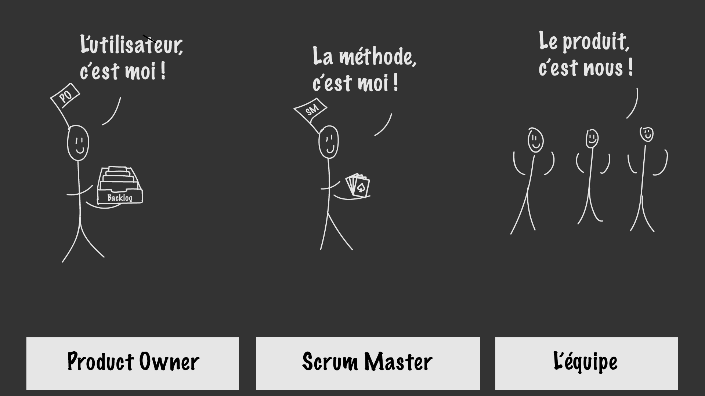

Appliquer les méthodologies agiles

- Un manifeste pour une nouvelle approche
- Les valeurs
- Les individus et leurs interactions sont plus importants que les processus et les outils,
- Un logiciel qui fonctionne est mieux qu’une documentation exhaustive,
- Collaborer avec les clients est préférable à la négociation contractuelle,
- S’adapter au changement est mieux que de suivre un plan.
- Les principes
- Les pratiques
- Les méthodes
Dynamic systems development methods (DSDM)
: une approche incrémentale et itérative qui comprend une intégration constante des clients,Feature Driven Development (FDD)
: une méthodologie légère dont l’objectif est de créer un logiciel qui s’adapte efficacement aux changements de demandes,Extreme Programming (XP)
: une méthode très pragmatique et centrée sur les pratiques,Scrum
: la méthode agile la plus populaire et la plus largement utilisée. Il s’agit d’une stratégie de développement très flexible quand une équipe travaille ensemble pour atteindre un but commun. Nous la verrons plus en détail dans le prochain chapitre !
Nous l’avons vu précédemment, les méthodologies dites “agiles” existaient déjà bien avant l’apparition d’Internet pour le grand public : les usines Toyota utilisaient déjà la méthode Kanban pour optimiser la production de voitures. Plus tard, lorsque les projets informatiques se sont densifiés et ont accumulé les ralentissements, certains gestionnaires de projets ont adapté des méthodes utilisées par l’industrie à leur secteur. D’autres ont inventé les leurs, mettant le produit et l’interaction avec le client au centre de la planification.
Des débats ont émergés sur la pertinence des méthodologies séquentielles, perçues comme lourdes et poussiéreuses, face à d’autres pratiques qui commençaient à émerger.
Ces discussions ont débouché sur la rédaction d’un document, le Manifeste Agile (Agile Manifesto), au début des années 2000. Il définit des valeurs et des principes partagés par tous les signataires et qui vont à l’encontre des méthodes séquentielles, alors utilisées dans tous les secteurs et reconnues comme étant les plus performantes. Il s’agissait d’une prise de position considérable !
Les valeurs du manifeste sont les suivantes :
Puisque vous avez déjà un bon aperçu des méthodologies séquentielles, prenez une minute (ou plus…) pour relire les valeurs unes à unes et mesurer les changements que cela suppose. Ces valeurs sont relativement théoriques, mais elles découlent sur des principes très pratiques dans la gestion d’un projet au quotidien.
Le Manifeste comprend douze principes que je vous laisse lire tranquillement. Allez-y, ce n’est pas long ! 😉
Les quatre valeurs et les douze principes sont partagés par toutes les pratiques Agiles. Pourquoi avoir plusieurs méthodologies ? Tout simplement car les projets et les équipes sont différents, il faut donc avoir une palette de méthodes qui puisse s’adapter à tous les cas.
Selon Claude Aubry, auteur du plus célèbre guide sur Scrum (dont nous parlerons plus tard), une pratique est “une approche concrète et éprouvée qui permet de résoudre un ou plusieurs problèmes courants ou d’améliorer la façon de travailler lors d’un développement. [...] La notion de pratique prend toute son importance avec l’utilisation des méthodes agiles. À côté des valeurs et des principes qui sont universels, les pratiques sont le reflet de la mise en oeuvre sur le terrain.”.
Les pratiques sont regroupées en méthodes. Il en existe environ 8 que je vous laisse découvrir dans cet excellent article, les plus populaires étant :
Mais avant, fêtons Noël sous le signe de l’agilité ! Uncle Bob (Robert Martin, un des signataires du Manifeste Agile) a créé en 2013 cette superbe vidéo qui reprend toutes ses pratiques. Enjoy !
- Présentation
- Rôles 
- Débuter un projet : sprint 0
Les dieux du Scrum
Scrum veut dire “mêlée” en anglais. Hé oui, cette méthodologie de projet vient du Rugby ! La méthode utilise les valeurs et l’esprit du Rugby pour les adapter au développement de logiciel. Le sens de l’équipe, du contact, du travail bien fait ! Comme le pack pendant un ballon porté, l’équipe est soudée pour atteindre l’objectif. Le ScrumMaster est, quant à lui, similaire au demi de mêlée qui répartit les membres de l’équipe et les réorganise pour assurer la réussite du projet.
Alors, comment ça fonctionne ? Voyons ça dans le détail !
Sprinter, marquer un essai et boire une bière
Au début du projet, le projet est découpé en fonctionnalités qui sont listées dans un backlog, une sorte de grand tableau.
Puis nous allons nous intéresser à la première version qui sera mise en ligne. Elle sera volontairement minimale, se concentrant sur les fonctionnalités essentielles qui ont été indiquées comme prioritaires dans le backlog. Chaque mise en production est appelée release et est constituée de plusieurs sprints.
Un sprint dure entre une et deux semaines et sert à développer une ou plusieurs fonctionnalités. Elles sont décidées par l’équipe et le Product Owner (dont nous parlerons plus tard). Chaque sprint est découpé en Stories mais nous verrons tout cela en détails plus tard. Pour l’instant, gardons en tête que le·a développeur·se de chaque story produira les mêmes livrables que ceux que nous avons vus dans les méthodologies séquentielles mais à l’échelle d’une story et non du projet tout entier.
Pendant un sprint, des points sont effectués lors des mêlées quotidiennes. Cela permet au ScrumMaster, l’animateur chargé de faire appliquer Scrum, de déterminer l’avancement par rapport aux engagements de chacun et éventuellement d’apporter des ajustements.
À la fin de chaque sprint, l’équipe ajoute une nouvelle brique au projet qui devient ainsi, de sprint en sprint, de plus en plus complet. Son évaluation et le feedback récolté permettent d’ajuster le backlog pour le sprint suivant. Cela s’appelle l’inspection.
Puis l’équipe passe à un nouveau sprint, constitué de stories, et ainsi de suite !
Les responsabilités et les missions des intervenants d’un projet agile sont très différentes en comparaison avec un projet séquentiel car l’accent est mis sur l’appropriation du projet par chaque membre de l’équipe et sur la collaboration.
Le Product Owner
Il représente les utilisateurs finaux (ou clients) du projet. Il est responsable de la définition du contenu du produit et de la gestion des priorités. C’est pourquoi il alimente régulièrement le backlog en nouvelles fonctionnalités et trie les anciennes par ordre de priorité. Le Product Owner définit l’objectif d’une release et prend les décisions sur son contenu.
Idéalement il est disponible à plein temps pour mettre à jour le backlog, répondre aux questions sur le produit, définir les tests d’acceptation (dont nous parlerons plus tard) et passer les tests.
Le ScrumMaster
Il n’y a pas de chef de projet dans Scrum ! Chaque membre s’approprie le projet et l’équipe s’auto-organise en conséquence. Le Scrum Master aide l’équipe à appliquer les principes de Scrum, en la guidant sur la rédaction de User Stories par exemple. Il fait également en sorte d’éliminer tout obstacle qui pourrait entraver le projet. On dit souvent que le ScrumMaster “protège” l’équipe car toute demande provenant de l’extérieur doit auparavant passer par le processus Scrum.
L’équipe
Il s’agit du rôle principal ! C’est elle qui réalise le produit. Elle doit, par conséquent, posséder toutes les compétences nécessaires à son bon développement. Les membres sont choisis par le Scrum Master en fonction de leur motivation et de leurs compétences. C’est l’équipe qui définit elle-même la façon dont elle organise ses travaux, ce n’est pas le Scrum Master ni le Product Owner. Chaque membre de l’équipe apporte son expertise. Les responsabilités de l’équipe sont donc essentielles !
On appelle “Sprint 0” la période précédant le premier sprint. Elle est dédiée à l’organisation du projet : prise de connaissance avec le produit et avec les attentes des utilisateurs, recrutement de l’équipe et création du backlog.
Vision
Nous avons vu que la responsabilité majeure du Product Owner est de faire en sorte que le produit développé réponde à un besoin des utilisateurs. Il doit posséder une vision très forte du produit qu’il souhaite pour être capable de la transformer.
Cette vision répond à la question toute simple (et pourtant souvent complexe) du “pourquoi ?”. Pourquoi notre utilisateur va-t-il se servir de l’application que nous développons ? La réponse doit être limpide.
Utilisateurs
Le Product Owner se doit de connaître parfaitement les utilisateurs qu’il représente. Garder en tête leurs besoins est une première étape mais connaître leurs usages actuels est encore mieux.
Pour cela, le Product Owner crée une ou plusieurs personas et les partage au reste de l’équipe.
Backlog
Puis le Product Owner remplit le backlog.
Le Backlog est un grand tableau listant les fonctionnalités prévues pour le produit et leur état d’avancement (en attente de développement, prévu, en cours, fini, …). Chacune est placée par ordre de priorité de haut en bas, celle en haut étant la prochaine fonctionnalité à développer. Découvrez un backlog d’exemple créé par Brian Cervino.
- De la fonctionnalité à la tâche
- Développer un sotry
- écriture des spécifications fonctionnelles,
- écriture des spécifications techniques,
- tests et code
Avant de démarrer un sprint, l’équipe se réunit pour analyser les fonctionnalités en attente et déterminer le scope du prochain sprint. Mais pourquoi ne pas se dire “un sprint = une fonctionnalité” ?
Tout simplement car une fonctionnalité peut être très large et longue à mettre en oeuvre. Cela peut être, par exemple, “Compte utilisateur”. Or l’intérêt des méthodes agiles est justement de découper le projet en petites tâches plus faciles à planifier et à tester. Ces tâches sont appelées des “Stories” car elles sont écrites de manière à raconter une histoire.
Chaque story suit les mêmes étapes qu’un projet séquentiel mais à son échelle ! C’est-à-dire :
Les spécifications techniques forment la documentation technique et sera très utile à toute l’équipe.
Coder et tester. Une bonne pratique de développement dans un projet agile est de commencer par écrire les tests puis d’écrire le code qui les valide. Il s’agit du Test Driven Development (TDD pour les intimes). C’est un mode de pensée très différent mais extrêmement puissant.
Les tests en agile sont très similaires à ceux utilisés dans les méthodologies séquentielles (tests unitaires et d’intégration). Laissez-moi vous présenter un petit nouveau : le test de confirmation.
Vous avez désormais une vue globale du paysage, mais quel chemin emprunter pour poursuivre votre apprentissage ? Voici quelques pistes !
🌊 Méthodologies séquentielles
Guillaume Parrou a créé un excellent cours sur la gestion de projets en cascade. Vous y découvrirez de nombreux exemples dont, entre autres, un cahier des charges, une note de cadrage, des maquettes et un planning de GANTT.
🏉 Scrum
Livre Scrum - le Guide Pratique de la méthode la plus populaire aux éditions Dunod.
🚀 Extreme Programming
Uncle Bob, dans sa vidéo célébrant Noël, propose une bibliographie très pertinente pour entrer dans l’univers de l’Extreme Programming. Revoir la vidéo.
🔬 Tester son projet
Thoughtbot, une agence de développement américaine, a créé un excellent cours sur le Test Driven Development et les tests unitaires. Voir le cours.